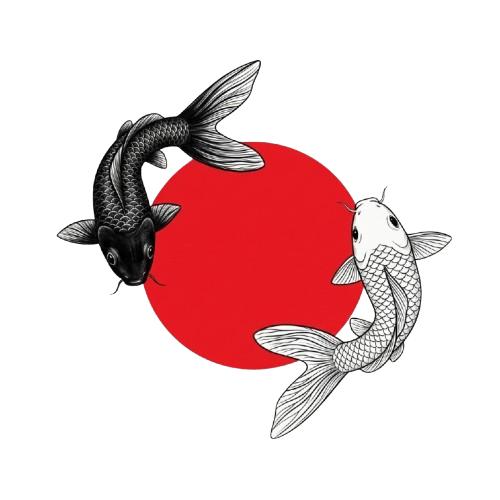

Wabi-Sabi
Finding beauty in simplicity, natural materials, and the marks left by time.
Beginner web designer / Learning HTML & CSS
I’m learning web design through small projects and building my first pages with HTML and CSS.
A little about me
ABOUT
I’m Farzad Jamifar, a beginner web designer learning independently and at my own pace. I’m practicing through small projects, learning HTML and CSS as I build my first pages.
Explore my practiceDESIGN INSPIRATION
These ideas shape the look of this portfolio. My focus remains on learning to create clear, thoughtful web pages.
Finding beauty in simplicity, natural materials, and the marks left by time.
A reminder that different qualities can coexist and bring each other into balance.
PRACTICE
A snapshot of what I’m learning as I build my first web projects.
A simple structure for ideas.
A quiet balance of form and color.
Just beginning to explore the language.